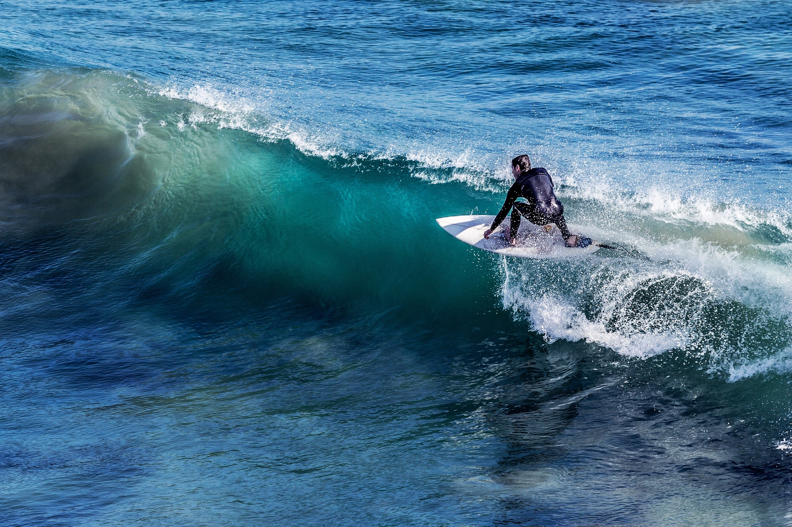
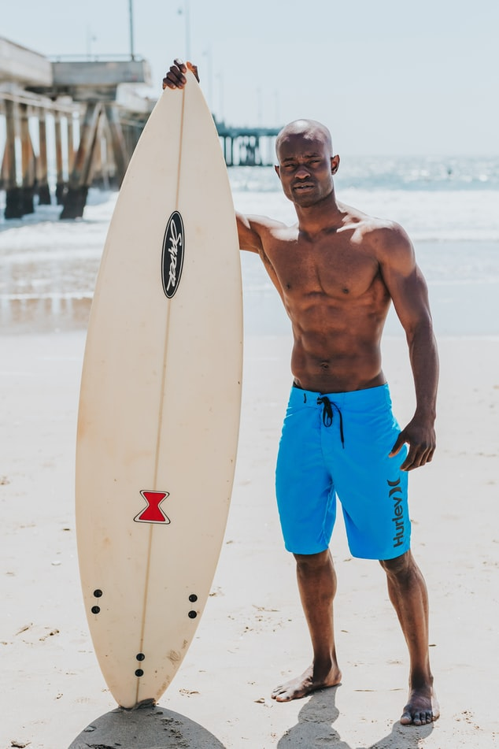
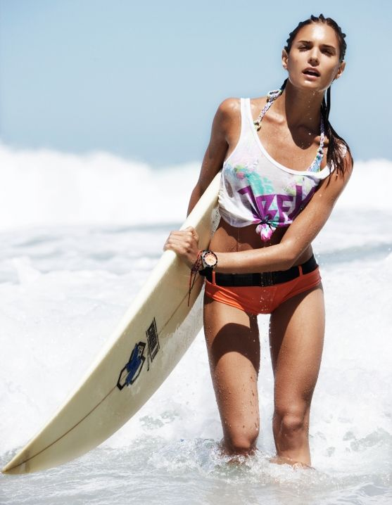
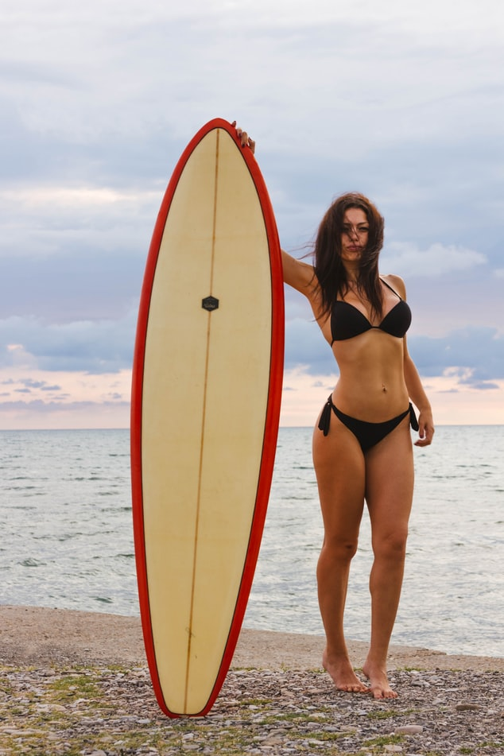

WAWE
Школа серфинга на канарских Островах
Школа серфинга на канарских Островах
Канарские острова не случайно называют европейскими Гавайями – это идеальное место для поклонников серфинга: стабильный теплый ветер круглый год, песчаные пляжи, километры нетронутых просторов и прозрачное море. А настоящей Меккой для серфингистов становится Фуэртевентура – второй по величине остров архипелага.
Именно здесь лучшее в Испании место, в котором можно пройти обучение серфингу. Кроме того, что зимой и осенью сюда приходят огромные атлантические волны, Фуэртевентура может похвастать и множеством мелководных спокойных лагун, отлично подходящих для обучения начинающих серфингистов.
Серфинг на Канарских островах доступен круглый год – и волны, и подходящая погода здесь есть всегда. Причем волну, подходящую по уровню, сможет найти и настоящий профи, и новичок. Не случайно считается, что именно это место лучше всего подойдет для обучения здесь возможно без сложностей переходить на новый уровень.
Перечисляя достоинства, нельзя обойти и то, что пляжи Фуэртевентуры самые протяженные на Канарах. В итоге невозможно представить их переполненных туристами. Вы столкнетесь только с теми, кого,как и вас, будет интересовать одна цель – обучение серфингу.
Пока что вы только хотите понять, что такое серфинг, или уже испытали всю прелесть катания на волнах, но желаете поднять свой уровень? Наша школа серфинга сможет предложить обучение для любого уровня подготовки.
Четыре часа увлекательных занятий в день помогут вам уверенно покорять волны, почувствовать себя настоящим серфингистом.
Основные достоинства нашей русской школы – высокое качество преподавания и организации занятий, безопасность (все наши клиенты застрахованы в компании Allianz), отличный инвентарь и экипировка (предоставляется на весь курс обучения), в том числе мягкие безопасные доски для начинающих.
Сначала мы определяем уровень катания и физической подготовки и только потом составляем программу подготовки. И можем заверить, что после того, как закончится обучение, вы не только получите массу великолепных ощущений, но и это уровень поднимется на новую ступень.
Преподаватели нашей школы серфинга в числе лучших серферов на Канарских островах. Среди них - чемпион Европы по лонгборду, который с радостью поделится опытом как с новичками, так и более опытными серферами. Все члены преподавательского состава являются сертифицированными членами Федерации серфинга Канарских островов. Некоторые из них знают русский язык, что определенно позиционирует нас как русскую школу серфинга за границей!
Весь тренерский состав регулярно участвует в семинарах и курсах повышения квалификации, которые проводятся по всему миру различными известными серф-клубами и федерациями. Поэтому в нашей школе серфинга вы можете быть спокойны: вас обучают лучшие тренеры!
Методика обучения серфингу рассчитана как на новичков, на серферов среднего уровня, так и на серферов уровня ТОП. Тренеры находят подход к каждому, несмотря на то, что обучение серфингу в нашей школе производится в группах. Однако, мы предлагаем персональные уроки серфинга - только вы и тренер! П


Майк Главный инструктор
Mary Инструктор
Ольга Инструктор